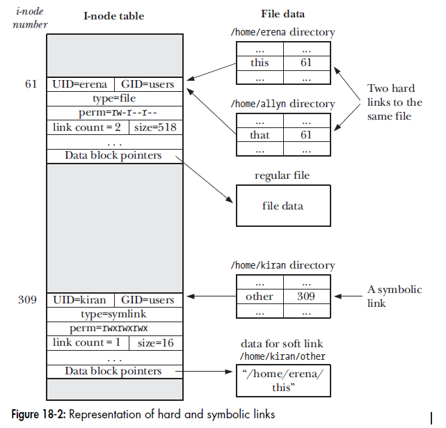
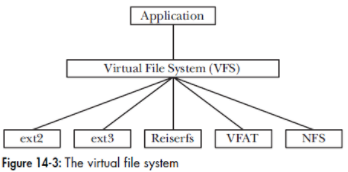

Two level of buffering:
write() system call, which transfers the data into the kernel buffer cache (maintained in kernel memory).write() is immediately flushed to the disk.Buffering in stdio library
fprintf(), fscanf(), fgets(), fputs(), fputc(), fgetc()) when operating on disk files.Kernel buffer cache
read() and write() system calls copy data between a user-space buffer and a buffer in the kernel buffer cache.Nowadays, Linux has multiple different cache types.
The dentry cache (Dcache) remembers mappings from directory entry (struct dentry) to VFS inode. The Dcache improves the performance of path name lookups. The Dcache entries are stored in a hash table for fast lookup (hashed by the parent dentry and directory entry name).
The Dcache also performs negative caching, which remembers lookups for nonexistent entries. This improves the performance of failed lookups, which commonly occur when searching for shared libraries.
The Dcache performance has been further improved with the read-copy-updatewalk (RCU-walk) algorithm. This attempts to walk the path name without updating dentry reference counts, which were causing scalability issues due to cache coherency with high rates of path name lookups on multi-CPU systems. If a dentry is encountered that isn’t in the cache, RCU-walk reverts to the slower reference-count walk (ref-walk), since reference counts will be necessary during file system lookup and blocking.
The Dcache grows dynamically, shrinking via LRU (least recently used) when the system needs
more memory. Its size can be seen via /proc.
Inode cache contains VFS inodes (struct inodes), each describing properties of a file system object. These properties are frequently accessed for file system workloads, such as checking permissions when opening files, or updating timestamps during modification. These VFS inodes are stored in a hash table for fast and scalable lookup (hashed by inode number and file system superblock), although most of the lookups will be done via the Dentry cache.
The inode cache grows dynamically, holding at least all inodes mapped by the Dcache. Its size can be seen via the /proc/sys/fs/inode* files.
如果file descriptor占满了，会发生 too many open files。Linux 对可打开的文件描述符的数量分别作了三个方面的限制：
cat /proc/sys/fs/file-max 查看；cat /etc/security/limits.conf 查看；cat /proc/sys/fs/nr_open 查看；The file I/O is performed at the location specified by offset, rather than at the current file offset. The file offset is left unchanged by these calls.
Calling pread() is equivalent to atomically performing the following calls:
off_t orig;
orig = lseek(fd, 0, SEEK_CUR); /* Save current offset */
lseek(fd, offset, SEEK_SET);
s = read(fd, buf, len);
lseek(fd, orig, SEEK_SET); /* Restore original file offset */
multiple threads can simultaneously perform I/O on the same file descriptor without being affected by changes made to the file offset by other threads.
Scatter input and gatter output. Read into an array of buffers, write from user buffers into file.
controls the form of buffering employed by the stdio library
fflush() is a library function that forces the data in a stdio output stream to be written (i.e., flushed to a kernel buffer via write()).
fflush(stdout) is performed whenever input is read from stdin.fflush() or one of the file-positioning functions (eg, fseek())The fsync() system call causes the buffered data in the kernel buffer and all metadata associated with the open file descriptor fd to be flushed to disk.
sync()
The sync() system call causes all kernel buffers containing updated file information (i.e., data blocks, pointer blocks, metadata, and so on) to be flushed to disk.
sync() returns only after all data has been transferred to the disk device (or at least to its cache, i.e. modern disk drives have large internal caches).pdflush, ensures that modified kernel buffers are flushed to disk if they are not explicitly synchronized within 30 seconds.
/proc/sys/vm/dirty_expire_centisecs specifies the age (in hundredths of a second) that a dirty buffer must reach before it is flushed by pdflush.fdatasync()
Very similar to fsync(), but writes to disk only the buffers that contain the file’s data, not those that contain inode information. Because Linux 2.6 does not have a specific file method for fdatasync( ), this system call uses the fsync method and is thus identical to fsync( ).
int posix_fadvise(int fd, off_t offset, off_t len, int advice);
The posix_fadvise() system call allows a process to inform the kernel about its likely
pattern for accessing file data. The kernel may (but is not obliged to) use the information to optimize its use of the buffer cache, thereby improving I/O performance for the process. The advice argument:
sync() or fdatasync() call that specifies fd.defined in <mm/fadvise.c>
stat() returns information about a named file, if it is a symbolic link, it follows the link to the file.lstat() is similar to stat(), except that if it is a symbolic link, information about the link itself is returned, rather than the file to which the link points.Raw I/O is issued directly to disk offsets, bypassing the file system altogether. It has been used by some applications, especially databases, that can manage and cache their own data better than the file system cache. A drawback is more complexity in the software, and administration difficulties: the regular file system toolset can’t be used for backup/restore or observability.
Direct I/O allows applications to use a file system but bypass the file system cache, for example,
by using the O_DIRECT open(2) flag on Linux. This is similar to synchronous writes (but
without the guarantees that O_SYNC offers), and it works for reads as well. It isn’t as direct as
raw device I/O, since mapping of file offsets to disk offsets must still be performed by file system
code, and I/O may also be resized to match the size used by the file system for on-disk layout (its
record size) or it may error (EINVAL). Depending on the file system, this may not only disable
read caching and write buffering but may also disable prefetch.
synchronous I/O: Write I/O is synchronous when a file is opened using the flag O_SYNC or one of the variants, O_DSYNC and O_RSYNC (which as of Linux 2.6.31 are mapped by glibc to O_SYNC).
The st_atime, st_mtime, and st_ctime fields of the stat structure contain file timestamps.
Table 15-2 shows the effect of various system calls on file timestamps.
utime() and utimes()
System call utime() can change st_atime and st_mtime information stored in i-node.
Glibc library functions:
futimes(): use fd to specify the filelutimes(): if it is a symbol link, it doesn’t dereference it, it changes the timestamp of the link itself.Improved functions:
utimensat() system call in kernel 2.6+futimens() glic library call in glibc 2.6
New file ownership.
chown(), lchown(), and fchown() system calls
Change the owner (user ID) and group (group ID) of a file.
lchown() changes the link itself.fchown() uses the fd to refer to a file.chown(2), the chown command uses the chmod() system call to reenable the set-user-ID and set-group-ID bits.)Layout of st_mode bit mask in i-node
A symbolic link is always created with read, write, and execute permissions enabled for all users, and these permissions can’t be changed. These permissions are ignored when dereferencing the link.
Deprecated: dn older UNIX implementations, If the sticky bit was set on a program file, then the first time the program was executed, a copy of the program text was saved in the swap area—thus it sticks in swap, and loads faster on subsequent executions.
In modern Linux, for directories, the sticky bit acts as the restricted deletion flag.
unlink(), rmdir()) and rename (rename()) files in the directory only if it has write permission on the directory and owns either the file or the directory./tmp directory.chmod +t(The Linux programming interface, Chapter 13-18)
File system type history: https://opensource.com/article/18/4/ext4-filesystem
The inode (short for index node) object represents all the information needed by the kernel to manipulate a file or directory. one i-node for each file. It contains information of below:
To locate the file data blocks, the kernel maintains a set of pointers in the i-node. Under ext2, each i-node contains 15 pointers.
above strategy is used in ext2/3, but it doesn't scale well for large files. It is not used in ext4
Kernel maintains three tables as below:
Per-process open file descriptor table
System-wide open file descriptions (also referred to as open file table, each entry as open file handle)
Each file system has a table of i-nodes for all files residing in the file system.
Cases:
case 1: Process A, descriptors 1 and 20 both refer to the same open file description (labeled 23).
case 2: Descriptor 2 of process A and descriptor 2 of process B refer to a single open file description (73).
Case 3: Descriptor 0 of process A and descriptor 3 of process B refer to different open file descriptions, but that these descriptions refer to the same i-node table entry (1976), in other words, to the same file.
Directories in i-node entry:
link() and unlink()In addition to maintaining a link count for each i-node, the kernel also counts open file descriptions for the file. The file will be removed only no process holding open descriptors to it.
unlink() system call removes a link (deletes a filename) and, if that is the last link to the file, also removes the file itself.tmpfile(): create and open a temporary file, unlink it immediately, and then continue to use it within our program, relying on the fact that the file is destroyed only when we close the file descriptor.How to find filename from a file descriptor?
You can use readlink on /proc/self/fd/NNN where NNN is the file descriptor.
# readlink /proc/self/fd/7
/home/grawity/lib/dotfiles/vim/backup/%home%grawity%.bashrc.swp

int remove(const char* pathname)
retrieve the content of the link itself—that is, the pathname to which it refers.
readlink() does not append a terminating null byte to buf. It will (silently) truncate the contents (to a length of bufsiz characters) if the buffer is too small to hold.
The VFS defines a generic interface for file-system operations. All programs that work with files specify their operations in terms of this generic interface.
Each file system provides an implementation for the VFS interface.
/dev/fd is a symbolic link to the Linux-specific /proc/self/fd directory, which is a special case of the Linux-specific /proc/PID/fd directories.
/dev/fd/0 refers to the standard input of the current process.
ls | diff /dev/fd/0 oldfilelist/dev/stdin, /dev/stdout, and /dev/stderr are provided as symbolic links to, respectively, /dev/fd/0, /dev/fd/1, and /dev/fd/2.Thus,
/dev/fd → /proc/self/fd → /dev/PID/fd
/dev/stdin → /proc/fd/0
/dev/stdout → /proc/fd/1
/dev/stderr → /proc/fd/2
File locks allow processes to synchronize access to a file. Linux provides two file locking system calls:
flock() , also called BSD file lockfcntl(), also called record file lock.The flock() system call locks an entire file. Two types of locks may be placed:shared locks and
exclusive locks
The fcntl() system call places locks (“record locks”) on any region of a file. Two types of locks may be placed: read locks and write locks (semantically similar to the shared and exclusive lock of flock()).
The Linux-specific /proc/locks file displays the file locks currently held by all processes on the system.
many daemons—need to ensure that only one instance of the program is running on the system at a time. A common method of doing this is to have the daemon create a file in a standard directory and place a write lock on it.
Conventions:
/var/run directory is the usual location for such lock files. Or specified in daemon’s configuration file./var/run/syslogd.pid)Code refer to The linux programming interface listing 55-4
The four primary object types of the VFS are
superblock object, which represents a specific mounted filesystem.inode object, which represents a specific file.dentry object, which represents a directory entry, which is a single component of a path.file object, which represents an open file as associated with a process.An operations object is contained within each of these primary objects.These objects describe the methods that the kernel invokes against the primary objects:
super_operations object, which contains the methods that the kernel can
invoke on a specific filesystem, such as write_inode() and sync_fs()inode_operations object, which contains the methods that the kernel can
invoke on a specific file, such as create() and link()dentry_operations object, which contains the methods that the kernel can
invoke on a specific directory entry, such as d_compare() and d_delete()file_operations object, which contains the methods that a process can
invoke on an open file, such as read() and write()The operations objects are implemented as a structure of pointers to functions that operate on the parent object.
The superblock object is represented by struct super_block and defined in <linux/fs.h>.
<fs/super.c>.alloc_super() function.The most important item in the superblock object is s_op, which is a pointer to the
superblock operations table. The superblock operations table is represented by struct super_operations and is also defined in <linux/fs.h>.
When a filesystem needs to perform an operation on its superblock, it follows the
pointers from its superblock object to the desired method. For example, if a filesystem
wanted to write to its superblock, it would invoke sb->s_op->write_super(sb);
The inode object is represented by struct inode and is defined in <linux/fs.h>.
Here is the structure, with comments describing each entry
struct inode {
struct hlist_node i_hash; /* hash list */
struct list_head i_list; /* list of inodes */
struct list_head i_sb_list; /* list of superblocks */
struct list_head i_dentry; /* list of dentries */
unsigned long i_ino; /* inode number */
atomic_t i_count; /* reference counter */
unsigned int i_nlink; /* number of hard links */
uid_t i_uid; /* user id of owner */
gid_t i_gid; /* group id of owner */
kdev_t i_rdev; /* real device node */
u64 i_version; /* versioning number */
loff_t i_size; /* file size in bytes */
seqcount_t i_size_seqcount; /* serializer for i_size */
struct timespec i_atime; /* last access time */
struct timespec i_mtime; /* last modify time */
struct timespec i_ctime; /* last change time */
unsigned int i_blkbits; /* block size in bits */
blkcnt_t i_blocks; /* file size in blocks */
unsigned short i_bytes; /* bytes consumed */
umode_t i_mode; /* access permissions */
spinlock_t i_lock; /* spinlock */
struct rw_semaphore i_alloc_sem; /* nests inside of i_sem */
struct semaphore i_sem; /* inode semaphore */
struct inode_operations *i_op; /* inode ops table */
struct file_operations *i_fop; /* default inode ops */
struct super_block *i_sb; /* associated superblock */
struct file_lock *i_flock; /* file lock list */
struct address_space *i_mapping; /* associated mapping */
struct address_space i_data; /* mapping for device */
struct dquot *i_dquot[MAXQUOTAS]; /* disk quotas for inode */
struct list_head i_devices; /* list of block devices */
union {
struct pipe_inode_info *i_pipe; /* pipe information */
struct block_device *i_bdev; /* block device driver */
struct cdev *i_cdev; /* character device driver */
};
unsigned long i_dnotify_mask; /* directory notify mask */
struct dnotify_struct *i_dnotify; /* dnotify */
struct list_head inotify_watches; /* inotify watches */
struct mutex inotify_mutex; /* protects inotify_watches */
unsigned long i_state; /* state flags */
unsigned long dirtied_when; /* first dirtying time */
unsigned int i_flags; /* filesystem flags */
atomic_t i_writecount; /* count of writers */
void *i_security; /* security module */
void *i_private; /* fs private pointer */
};
the inode_operations member i_op describes the filesystem’s implemented functions that the VFS can invoke on an inode. inode operations are invoked via i->i_op->truncate(i).
VFS treats directories as a type of file. Despite this useful unification, the VFS often needs to perform directory-specific operations, such as path name lookup.
To facilitate this, the VFS employs the concept of a directory entry (dentry). A dentry is a specific component in a path.
/bin/vi , /, bin, and vi are all dentry objects. The first two are directories and the last is a regular file.The dentry object does not correspond to any on-disk data structure. The VFS creates it on-the-fly from a string representation of a path name when performing directory operations.
Dentry objects are represented by struct dentry and defined in <linux/dcache.h>.
dentry cache
After the VFS layer goes through the trouble of resolving each element in a path name into a dentry object and arriving at the end of the path, the kernel caches dentry objects in the dentry cache or, simply, the dcache.
The dcache also provides the front end to an inode cache, the icache. Inode objects that are associated with dentry objects are not freed because the dentry maintains a positive usage count over the inode. This enables dentry objects to "pin" inodes in memory. when a path name lookup succeeds from cache, the associated inodes are already cached in memory.
The file object is used to represent a file opened by a process.
The file object is the in-memory representation of an open file.The object (but not
the physical file) is created in response to the open() system call and destroyed in
response to the close() system call.
The file object is represented by struct file and is defined in <linux/fs.h>.
struct file {
union {
struct list_head fu_list; /* list of file objects */
struct rcu_head fu_rcuhead; /* RCU list after freeing */
} f_u;
struct path f_path; /* contains the dentry */
struct file_operations *f_op; /* file operations table */
spinlock_t f_lock; /* per-file struct lock */
atomic_t f_count; /* file object’s usage count */
unsigned int f_flags; /* flags specified on open */
mode_t f_mode; /* file access mode */
loff_t f_pos; /* file offset (file pointer) */
struct fown_struct f_owner; /* owner data for signals */
const struct cred *f_cred; /* file credentials */
struct file_ra_state f_ra; /* read-ahead state */
u64 f_version; /* version number */
void *f_security; /* security module */
void *private_data; /* tty driver hook */
struct list_head f_ep_links; /* list of epoll links */
spinlock_t f_ep_lock; /* epoll lock */
struct address_space *f_mapping; /* page cache mapping */
unsigned long f_mnt_write_state; /* debugging state */
};
The file object methods are specified in file_operations f_op member. It is and defined in <linux/fs.h>.